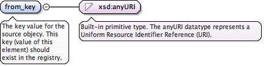

The key value for the source objecy. This key (value of this element) should exist in the registry.
Diagram

Type
xsd:anyURI
Properties
content
simple
minOccurs
1
maxOccurs
1
Source
<xsd:element name="from_key" type="xsd:anyURI" minOccurs="1" maxOccurs="1"><xsd:annotation><xsd:documentation xml:lang="en">The key value for the source objecy. This key (value of this element) should exist in the registry.</xsd:documentation></xsd:annotation></xsd:element>
<xsd:element name="to_purl" type="xsd:anyURI" minOccurs="0" maxOccurs="1"><xsd:annotation><xsd:documentation xml:lang="en">Related grant connected by PURL</xsd:documentation></xsd:annotation></xsd:element>